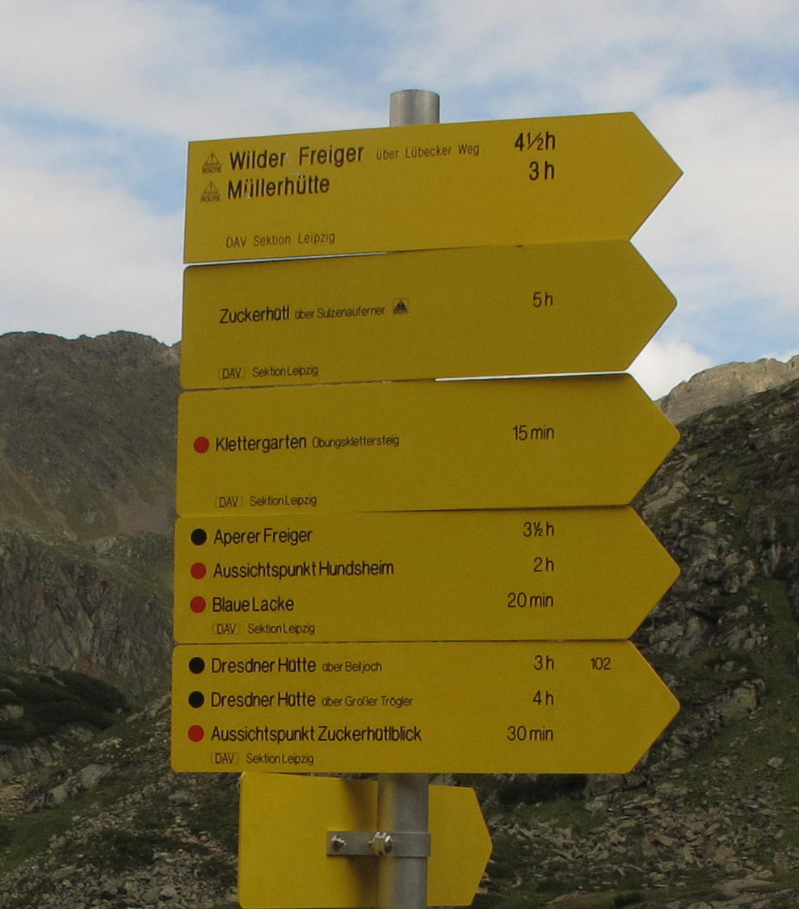
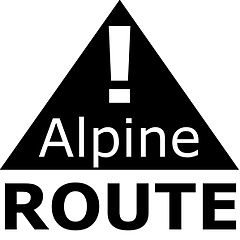

классификация троп
Классификация горных троп на территории федеральной земли Тироль (Австрия)
Практически все тропы в альпах классифицированы по сложности их прохождения, при этом системы классификации и маркировки троп в разных районах могут отличаться. Маршрут нашей группы пролегал по территории итальянской автономной провинции Южный Тироль и австрийской федеральной земли Тироль. В Италии маркировка троп не несла в себе никакой информации о сложности их прохождения. В Австрии информация о сложности троп в обязательном порядке приводится на каждом из указателей (рис. giude_sample). Порядок классификации и маркировки троп на территории федеральной земли Тироль закреплен на административном уровне.

Рис. . Указатели троп в Австрии.
Всего выделено 4 типа горных троп исходя из сложности их прохождения.
- Пешеходные тропы
- Широкие маркированные тропы, проходящие по местности с небольшим уклоном, как правило, в долинах либо лесах. Для их прохождения нет необходимости в специфическом туристском опыте. Рекомендуется иметь спортивную одежду и удобную обувь. Названия таких троп пишутся на указателях без специальных символов, характеризующих сложность.
- "Красные" горные тропы
- Узкие тропы, которые могут проходить по достаточно крутым участкам. Присутствует маркировка. Существует опасность срыва. Отдельные участки могут быть защищены короткими ферратами. Для движения по "красным" тропам необходим опыт горных походов. С собой нужно иметь треккинговую обувь и средства индивидуальной самостраховки (альпенштоки, ледорубы, треккинговые палки). На указателях обозначаются красным кружком.
- "Черные" горные тропы
- Узкие и крутые тропы, при движении по которым велика опасность срыва. Есть маркировка. Могут присутствовать участки, преодолеваемые свободным лазаньем, а также длинные участки защищенные ферратами. Для прохождения троп необходимо иметь достаточный горный опыт. Необходимы средства индивидуальной самостраховки и страховочные системы с оборудованием (усы, карабины) для прохождения феррат. Для прохождения некоторых троп может потребоваться специальное скальное оборудование и веревки. На указателях обозначаются черным кружком.
- "Альпийские тропы"
- Сложные маршруты, проходящие по скалам либо ледникам. Необходим специальный высокогорный опыт, соответствующий тем типам препятствий, которые присутсвуют на тропе. Для прохождения необходимо иметь скальное либо ледовое снаряжение, которое подбирается специально для прохождения конкретных препятствий, и применять приемы коллективной страховки (движение в связках по ледникам и т.п.). Маркировка может отсутствовать, либо быть выполнена энтузиастами в виде туров либо вешек. На указателях обозначаются знаком "Alpine Route!" (рис. alpine_route)
[таблица классификаций троп (на немецком языке)]

Рис. . Знак "Alpine Route!".
Следует помнить, что наличие классификации троп не освобождает туриста от детальной проработки маршрута и выяснения всех особенностей препятствий, которые планируется преодолеть при его прохождении.
Наряду со сложностью на указателях приводится время прохождения тропы. Данная цифра является условной: при ее вычислении предполагается, что турист идет со скоростью 4 км/час по горизонтали, понимается в гору на 300 м за один час и осуществляет спуск со скоростью 500 м/час. Такие скорости характерны для физически подготовленного туриста, идущего без груза по простым тропам, но никак не для группы, несущей на себе полный комплект снаряжения и питания.